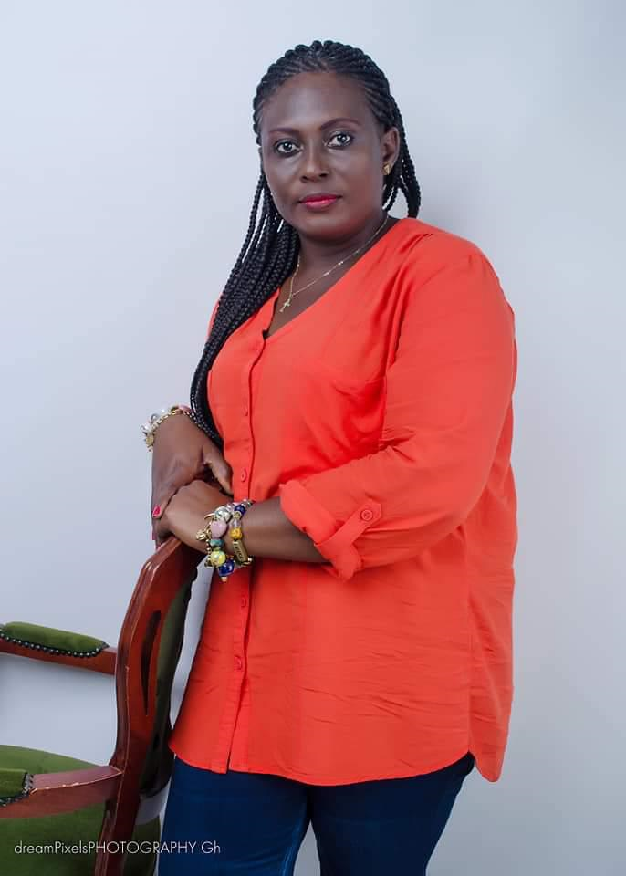

Address:
Post Office Box 72
Abora Obohen via Abura Dunkwa
Tel: +447865023862
Digital Address (GPS): CA-03344-1265
Address:
Post Office Box 72
Abora Obohen via Abura Dunkwa
Tel: +447865023862
Digital Address (GPS): CA-03344-1265

Strikingly, almost all the leaders of OBOCO TRUST NGO and our chiefs
went through our community schools of Aboase-Obohen Methodist and
District Authority lower and upper schools. The schools were poor in
facilities, books and teaching materials but largely we had good teachers
who did everything to maintain good achievements. The problems of
economic hardships and lack of development were even worse but
pupils studied well. In 1968 our Odzikro, Nana Ando Kofi IV and also
our CEO, Egya Obo were among ten pupils who achieved distinction
results/certificates on MSL exams which is a record not yet broken.

1968 group of pupils went through their initial education walking
bare-footed, hardly had pocket money to take to school but they had
motivation to study well for their futures.
We live in a different world today where good education is even more
important. The Western world has parachuted ahead in education
particularly in technology, science and research. South Korea and India
have surged past most African countries in educational achievements
with investment in IT yielding massive results for these countries.
Governments play their role to provide good education but the time has
come for our community to think about how we can improve the
educational achievenents of our children. The birth of OBOCOTRUST
NGO as a vehicle for development gives hope, and its Foundation for
Education will bring focus so we can work assiduously with leaders and
teachers of our community schools to help drive up standards. We will
work tirelessly in search of funds, equipment, materials, books and
volunteers to help in the task of educating our youth.
Our mission is to
break through and help our children into higher education with about
25% or more enteringing into senior high schools or technical institutions
and 15% or more going on to study for degrees in universities each year
by the next 10 to 15 years. This is an ambitious target but worth working
hard for.
I am delighted to be appointed as Director of OBOCOTRUST
Foundation for Education, a position I accept with humility and
determination.
I am a product of our community schools and have been
engaged in teaching in the community in the past so I will dedicate
myself to the task of bringing high educational achievements and to
encourage further learning.

MAAME AMMA KWEGYIR AGGREY
Director, OBOCOTRUST Foundation for Education
January 2023.
INTERIM FOCUS:
● Fundraising for voluntary educational donations in Ghana and
internationally
● Running our Day Nursery School
● Early learning aimed at 100% participation for children aged 3
● Find ways to encourage able people in the community into
teaching
● Improve and aim for 100% primary school participation
● Identify and deal with issues that prevent schooling at early age in
our community
● Give support where needed on problems leading to non-schooling
● Encourage and strengthen community engagement in school
governance
● Organise weekend schools projects for children identified to need
extra teaching
● Organise summer schools to improve learning
● Organise workshops for specific educational projects in youth life
skills and opportunity for income generation
● Seek funds to introduce programmes on nutrition in community
schools under which food may be served to improve health and
enhance capacity to learn.
MEDIUM TERM OBJECTIVE
The nearest secondary school to our community is Aburaman at Abora
Dunkwa and there is a senior high school at Abakrampa. There is no
secondary school within the Abora North area so most students of this
large area of the Abora Asebu Kwamankese District go elsewhere for
secondary education after Aboraman’s intake has been exhausted. Our
Odzikro, Nana Ando Kofi IV has proposed that the community and its
neighbouring communities which share our community schools consider
working together on his proposal to upgrade part of our community
schools into a secondary technical institution.
Initial meetings amongst
representatives of the communities have been positive and a Steering
Committee has been set up to advance this proposal but without further
progress. OBOCOTRUST Foundation for Education will seek consent
and spearhead the efforts to bring this proposal into reality. Alternatively
in the event that the partnering communities show disinterest,
consideration would be given to work towards seeking funds to build a
secondary technical school at Obohen.